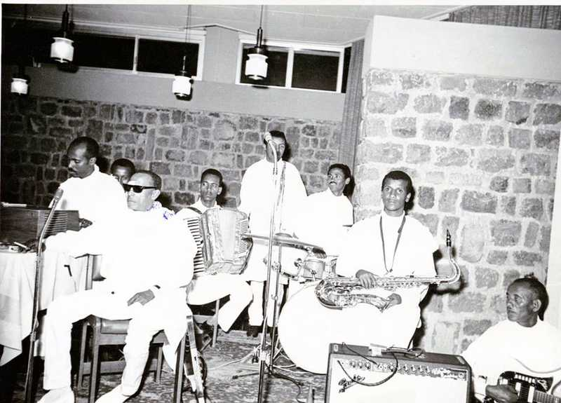
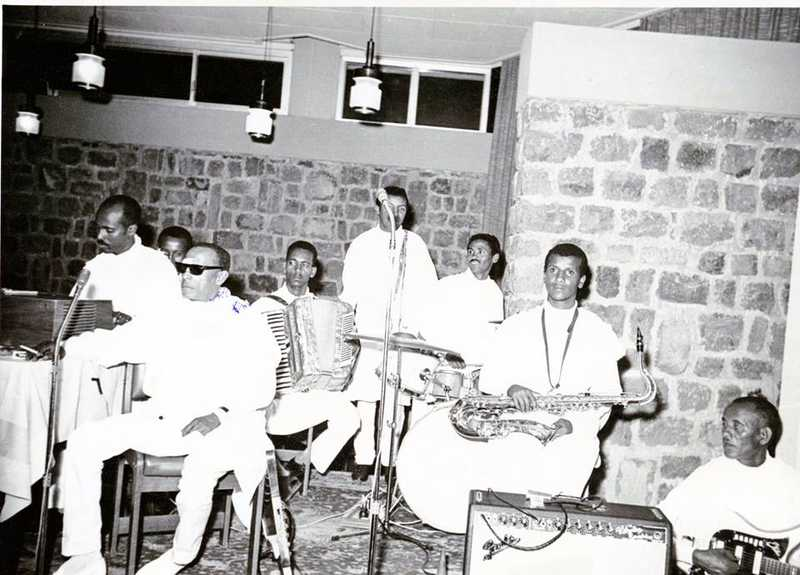

About us

Ato Ateweberhan Segid, Osman Abdurahim and Alamin Abdeletif are just three of the many great singers of all time, of Eritrea. Along with many others, these stars were joined together through the common cause of unifying Eritrea (during the time of the War for Independence) in the (Asmara Theater Association) also famously known as “MaTA”. Here, many singers pushed for a cultural unification amongst Eritrean, as well as using music to boost the morale of the people during this long period of hardship.
This Organization of talented Musicians also did a great job including female in this push for Eritrean national identity through music, including the famous Teberh Tesfahuney.
Alemeyahu Kasahai is described as the Father of Modern theatre in Eritreafor Eritreans. Before the 1940's all plays were catered to the Occupying Italians, not the native Eritreans. Kasahai went on to create Mahber Theatre (Indigenous Theatre) in the mid 1940's and began teaching Shakespeare and putting on plays for the native Eritreans for the first time, while under British control. The plays started with mixed messages and both slapstick humor/serious discussions.
Women were introduced into theatre more reluctantly than in the music world. MATA (Asmara Theatre Association) was created in 1961 until its end in 1974. With Haile Selassie attempting to keep Eritrea under close watch, he made sure all of the scripts were read by Ethiopian's to make sure there were no hidden political agendas. This did not stop the Eritrean's from pushing coded messages in support of Liberation and a free nation of Eritrea. When the Derg took over, their ruthless war tactics terrorized (then called) Cinema Asmara, at one point they stormed a play of 2,000 people and one playwright was said to have been shot 24 times and left for dead by Ethiopian soldiers as the Derg did not approve of what was going on in the Theatre in terms of catering to the Eritrean people.
The stories of/history of Mahber Theatre/Asmara Theatre/Cinema Asmara present the visual and lyrical/audible artistic talent of the Eritrean people from before and during the time of war. As well as the determination by the Eritrean people to create an environment that would promote national pride, strength and willpower all things that drove and boosted the morale of soldiers and civilians in their fight for Freedom.
| Mahber Theater Asmara | ||
|---|---|---|
| Artist Name | Song Title | Song |
| Osman Abdulrahim | ተፈታዊት ቆጽሊ | |
| Tberh Tesfahuney | እቲ ገዛና ዓቢ ህድሞ ፣ ትዃን ቁንጪ መሊኦሞ | |
| Tewolde Redda | ሽገይ ሃቡኒ | |
| Atewebrhan Segid | ዓደየ ዓደየ፣ በዓል መን ኢዮም ዝጠለሙ | |
 
